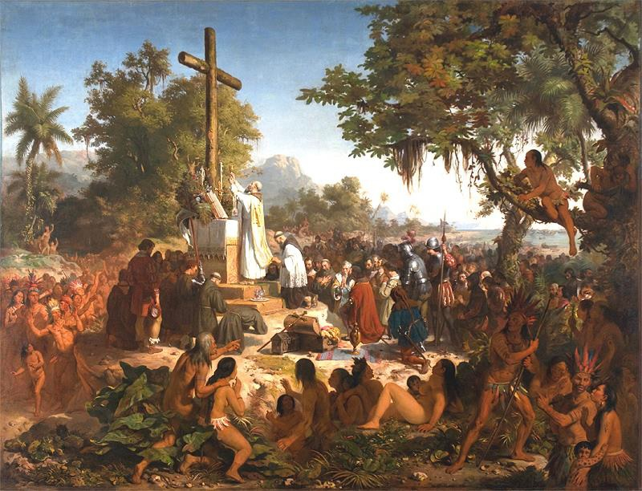
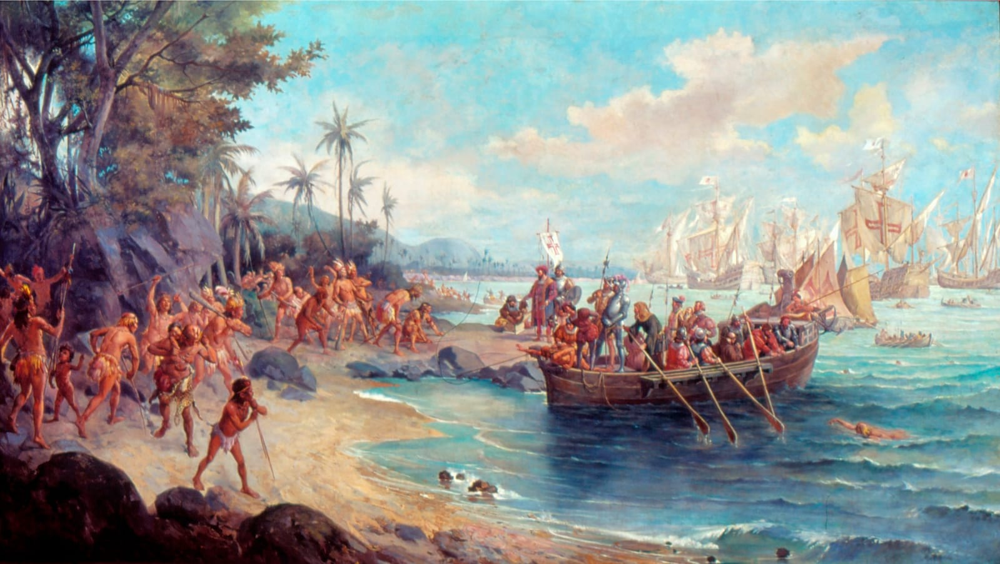
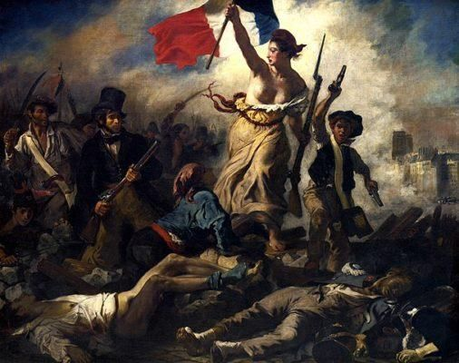
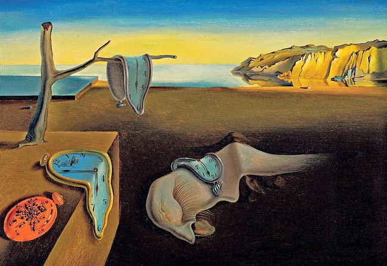
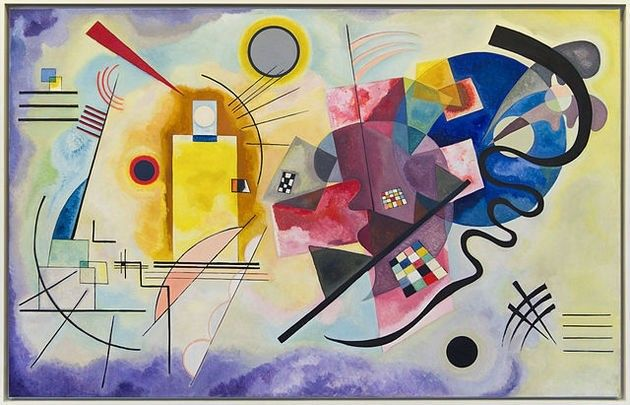
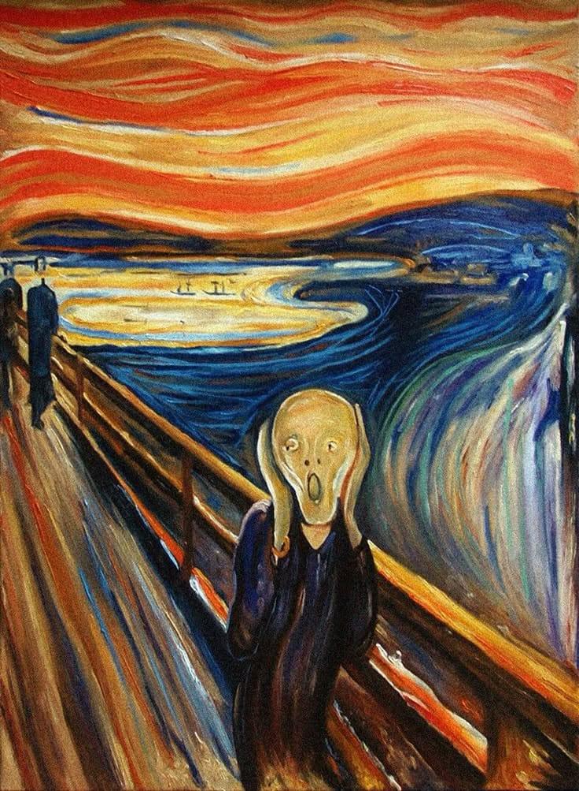
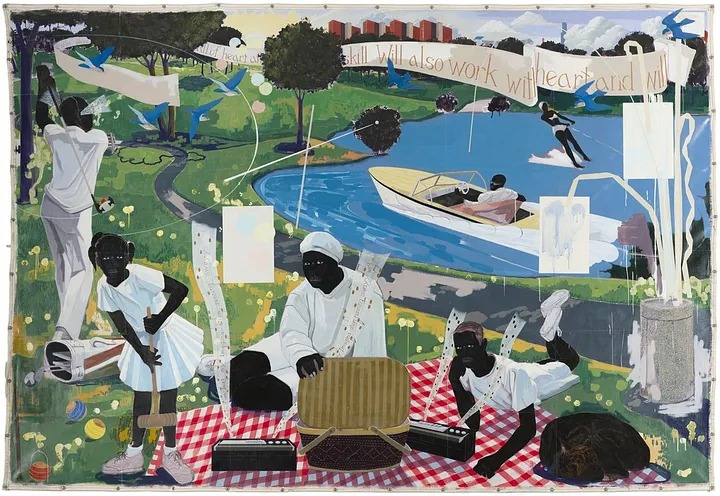
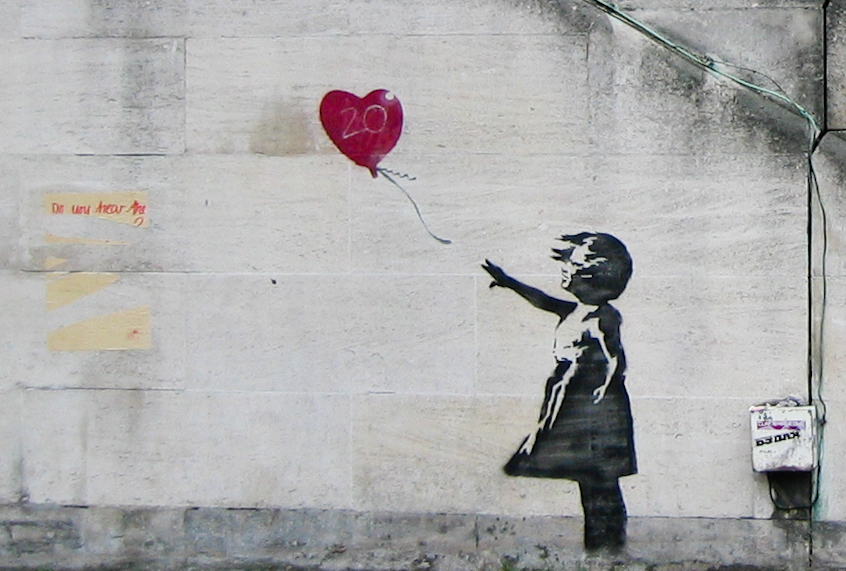
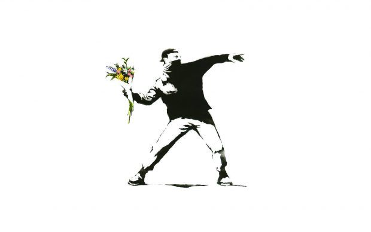

Galeria de Arte:
A vida através das cores
Conheça a história e a expressão por trás das grandes obras-primas da arte mundial.
Ver ObrasPinturas Históricas

"A Primeira Missa no Brasil"
Artista: **Victor Meirelles**
Ano: 1861
Técnica: Óleo sobre tela
A pintura retrata o momento da celebração da primeira missa realizada em terras brasileiras, em 26 de abril de 1500, logo após a chegada da expedição de Pedro Álvares Cabral. Victor Meirelles combina realismo e idealização, mostrando a cena como um marco simbólico do início da colonização e da introdução do cristianismo no Brasil.

"Desembarque de Pedro Álvares Cabral..."
Artista: **Oscar Pereira da Silva**
Ano: 1900
Técnica: Óleo sobre tela
A obra representa o momento em que Pedro Álvares Cabral e sua tripulação desembarcam na costa brasileira. Oscar Pereira da Silva busca valorizar o feito português e a grandiosidade da chegada à nova terra. A pintura segue o estilo acadêmico, com destaque para as expressões dos personagens.

"A Liberdade Guiando o Povo"
Artista: **Eugène Delacroix**
Ano: 1830
Técnica: Óleo sobre tela
A pintura retrata uma cena da **Revolução de Julho de 1830** em Paris. A mulher, Marianne, personifica a Liberdade e a República, guiando o povo sobre os corpos dos caídos. A obra é um símbolo poderoso do Romantismo, expressando o fervor da luta pela liberdade.
Vanguardas Modernas

"A Persistência da Memória"
Artista: **Salvador Dalí**
Ano: 1931
Técnica: Óleo sobre tela
Uma das pinturas mais famosas do **Surrealismo**. Dalí representa relógios derretendo em uma paisagem desértica, desafiando a lógica e a percepção do tempo. A obra sugere que o tempo é relativo e maleável, assim como a própria memória humana.

"Amarelo-Vermelho-Azul"
Artista: **Wassily Kandinsky**
Ano: 1925
Técnica: Óleo sobre tela
Obra emblemática do pioneiro da **arte abstrata**. Kandinsky usa formas geométricas e cores primárias para expressar emoções e sensações interiores, buscando uma harmonia espiritual pela ausência de representação do mundo real.

"O Grito"
Artista: **Edvard Munch**
Ano: 1893
Técnica: Óleo, têmpera e pastel
Ícone do **Expressionismo**, retrata uma figura angustiada diante de um céu vibrante. A obra expressa intensamente a ansiedade e o desespero humanos, simbolizando o sofrimento interior do indivíduo moderno.
Arte Contemporânea

Past Times
Artista: **Carla Neves**
Ano: 1997
Técnica: Fotografia
Fotografia e Edição Digital. Uma composição vertical que direciona o olhar para a profundidade e a linha do horizonte, explorando a memória e a passagem do tempo.

Girl With Balloon
Artista: Banksy
Ano: 2002
Técnica: Grafite
A obra retrata uma jovem estendendo a mão para um balão em forma de coração, sendo um símbolo de inocência, esperança e perda. Ganhou notoriedade mundial em 2018 com a autodestruição em leilão.

Thrower Flower
Artista: Banksy
Ano: 2005
Técnica: Grafite
Um manifestante mascarado lança um buquê de flores coloridas em vez de uma arma. A obra, surgida em Jerusalém, é um poderoso apelo pacifista e um símbolo global de protesto não violento.